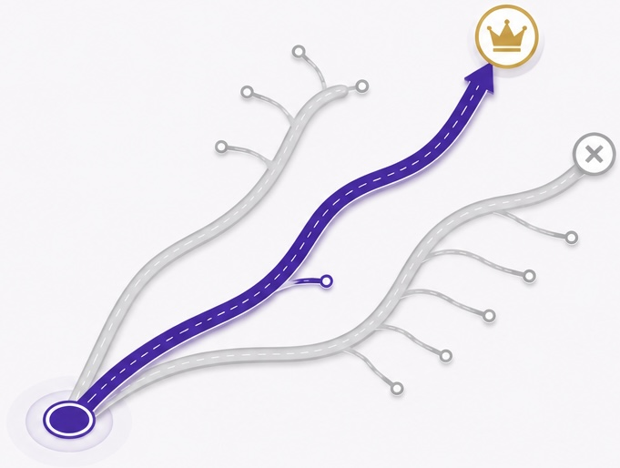

La tua
SUCCESSIONE.
Tutta in un
unico posto.
Avrai un esperto dedicato che si incarica della tua dichiarazione di successione e ti segue dall'inizio alla fine: sai sempre cosa fare, quali documenti servono e a che punto sei.

01
Partiamo dalla tua situazione
Analizziamo ciò che hai e capiamo cosa serve.
02
Avrai un esperto dedicato a te
Ti accompagna passo dopo passo, dall'inizio alla fine.
03
Non devi rincorrere nessuno
Hai un unico punto di riferimento e risposte sempre chiare.

Al tuo fianco
Un esperto dedicato a te.
Un professionista che conosce la tua situazione e rimane il tuo punto di riferimento dall'inizio alla fine. Prepara la dichiarazione di successione ed è a tua disposizione quando hai bisogno di una risposta.
Una persona.
La tua.
La tua.
Dall'inizio
alla fine.
alla fine.
Sempre con te.